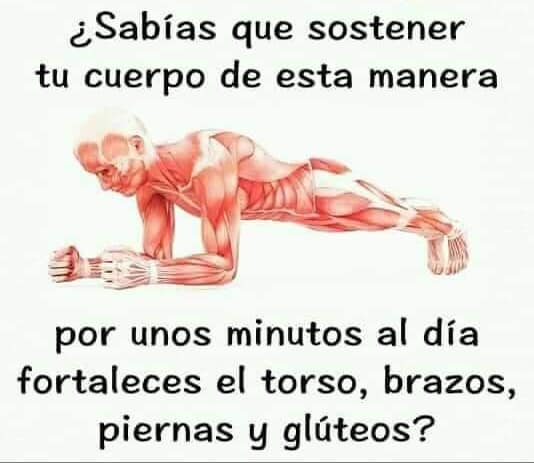
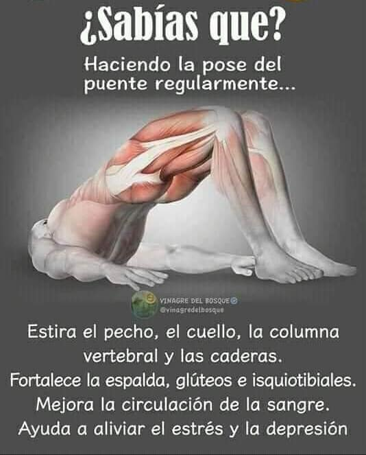

A continuación voy a dejar una lista de posturas que pueden ser muy útiles.
Poco a poco iré añadiendo y dotando de estilos esta pequeña web.
La Plancha
Esta postura es útil para fortalecer. Sobre todo torso, brazos, piernas y el pompis.
 La plancha. Una buena postura para fortalecer.Es una postura dura, intentar aguantar más de 1 minuto es difícil para gente sin entrenamiento. Lo ideal es ir mejorando repetirlo entre 3 y 5 veces al día con una duración de entre 1 minuto y minuto y medio.
En caso de no llegar a esa duración, cada semana aumentar unos 5 segundos la duración al ir fortaleciendo.
El puente
Esta postura es útil para fortalecer y mejorar sobre dolores de cuello y espalda.
Fortalece, espalda, glúteos e isquiotibiales. Además de mejorar la circulación.
 El puente. Una buena postura para fortalecer y aliviar tensiones.Es una postura, bastante sencilla, que haciendo uso de ella con asiduidad permite fortalecer distintos músculos y aliviar tensiones y estrés.
Lo ideal, es hacerla a menudo, entre 3 y 5 veces al día, con una duración entre 1 y 3 minutos, dependiendo del estado físico de cada uno. Ayuda para despejar también la mente y desconectar de los largos días de oficina.